| 日付 | 2024年11月16日（土） |
|---|---|
| メンバー | 家族 |
| アクセス | 車 |
家族で初めて東京ディズニーランドに行くことにする。
混雑を避けて平日に行こうと考えていたが娘の反対にあい、
混雑を覚悟で休日に行くことにする。
子供たちの年齢を考えると、もう家族で行く最後のチャンスかもしれない。
ディズニーランドの駐車場は混みそうなので歩いて20分ほどの場所に車を停める。
駐車料金も半額以下だ。
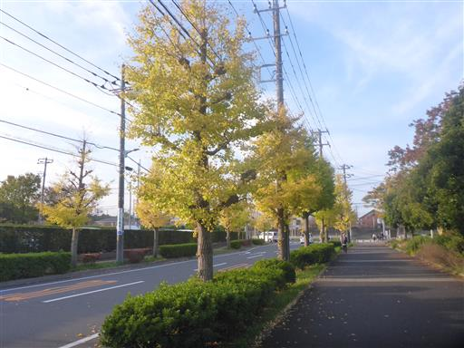
見明川を歩行者専用の橋で渡る。
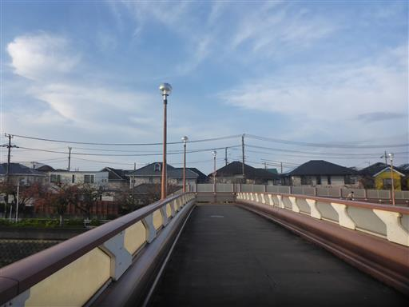
舞浜駅に到着。
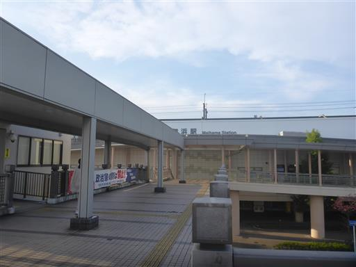
ここからは電車で来た人と合流し、人の流れに乗ってディズニーランドに向かう。
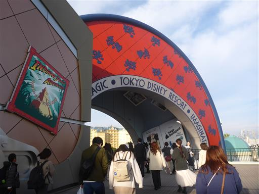
手荷物検査。オープンの１時間以上前に着いたがすでに長蛇の列だ。
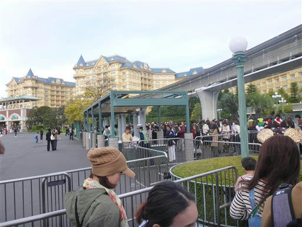
オープンを待つ人々であふれている。ゲートは10個くらいあり、放射状に並んでいる。
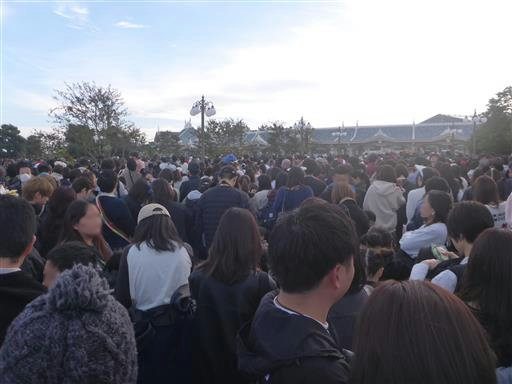
予定より15分前の8:45にオープン。長蛇の列ができていたので、9時過ぎにようやく入場できる。
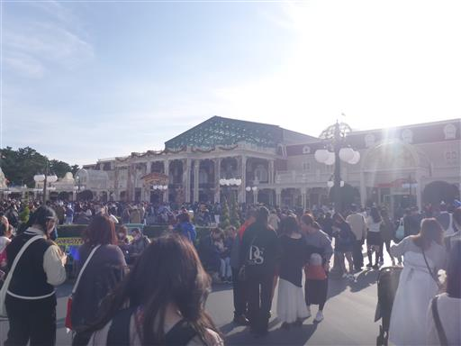
巨大なクリスマスツリー。もうそんなシーズンだ。
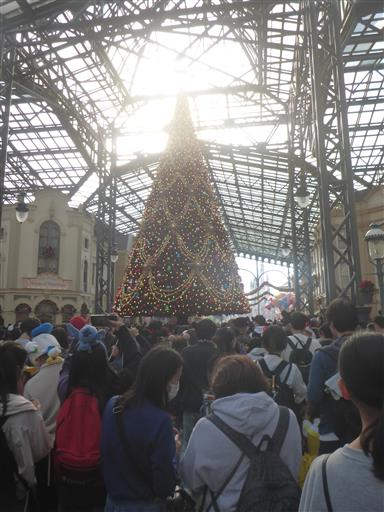
シンボルのシンデレラ城。
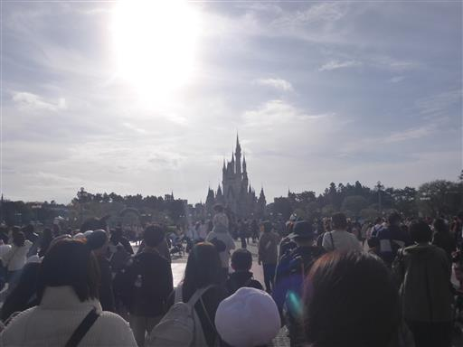
まずは人気アトラクションのスプラッシュ・マウンテンの列に並ぶ。すでに1時間以上待ちだ。
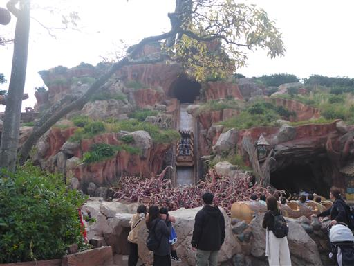
ウエスタンリバー鉄道がやってくる。
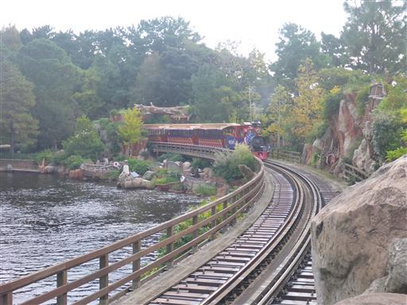
こちらは蒸気船マークトウェイン号。
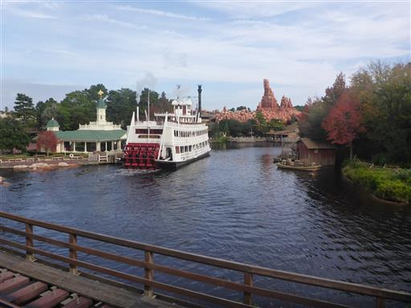
紅葉している木がチラホラみられる。
こんな場所で紅葉が見られるとは思わなかった。案外自然が多い。
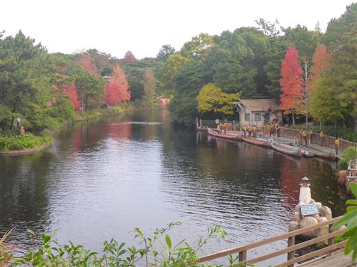
スプラッシュ・マウンテンの後はカヌー体験。
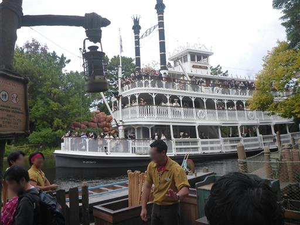
水面が近い。野生のカモがたくさん見られる。
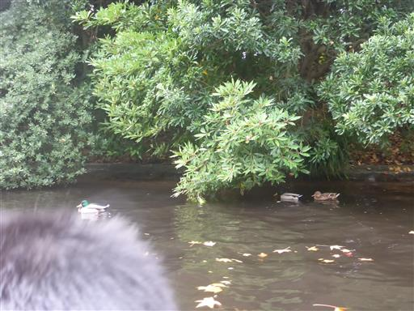
陸上にはインディアン？の人形が見られる。
オールを漕いでいると、結構腕が疲れてしまった。
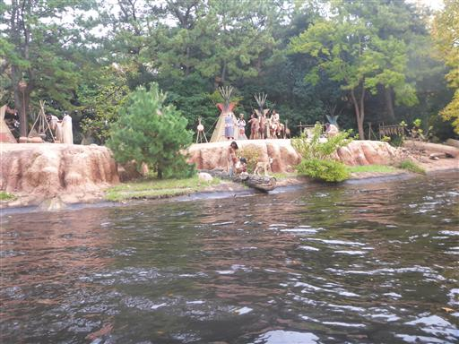
次はホーンテッドマンションへ。
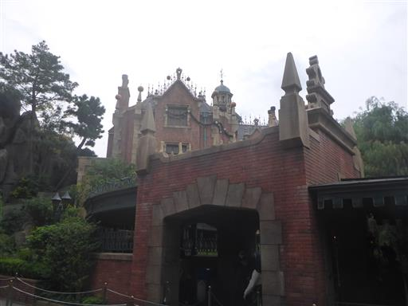
周囲にはカボチャが並んでいて雰囲気が出ている。
息子がお化け屋敷に行きたい、と言っていたので来てみたのだが、特に怖い内容ではなかった。
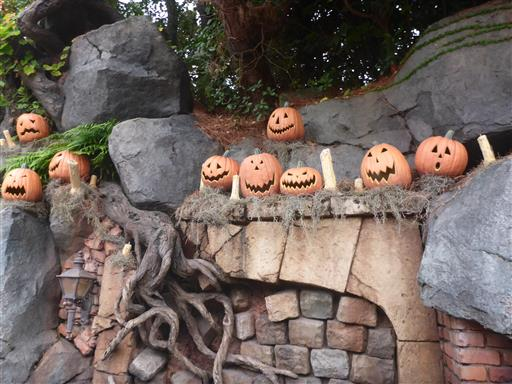
外に出ると、ラッキーなことにちょうどパレードの時間。
この後にクリスマスパレードがあるので、ここでは少しだけ眺める。
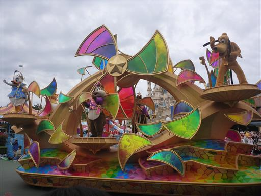
続いて先ほど眺めたウエスタンリバー鉄道に乗る。
ディズニーランド内を一周するのかと思ったら全然違っていて、
ジャングルの中を走る、というコンセプトのようだ。
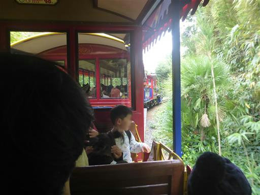
ビッグサンダー・マウンテンの側も通り過ぎる。後で乗る予定だ。
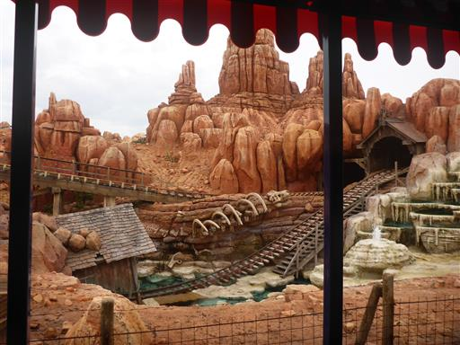
すさまじいベビーカーの数。本日は大混雑だ。
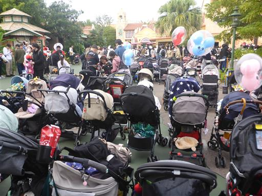
自動販売機。雰囲気を壊さないよう外観が工夫されており、
そのおかげでなかなか見つけられなかった。
ディズニーパッケージになっており、その分高い。
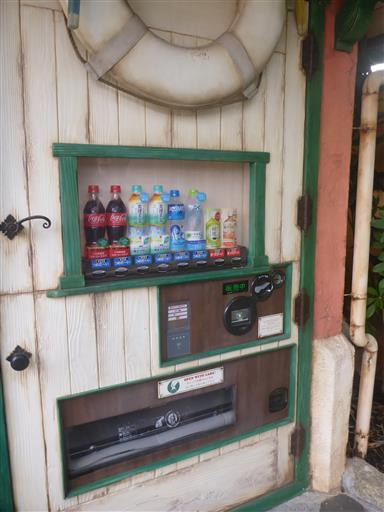
先ほど眺めたビッグサンダー・マウンテンに向かう。
ここは開場直後に予約しておいた場所で並ばずに乗れる。
2時間に1施設予約できるシステムになっているのだが、
ここを取ったあとはどこも満席で予約できなくなっていた。
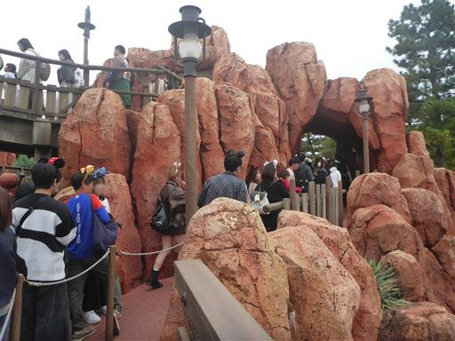
場内唯一のジェットコースター。
決してスピードが速いわけではなく子供向けだが、武骨な骨組みではなく周囲の景色も楽しめるのが良い。
息子はジェットコースターが初めてなので、喜んでいた。
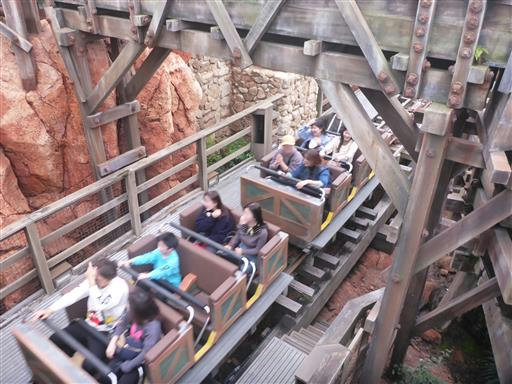
15時からのクリスマスパレードが始まるので場所を確保。
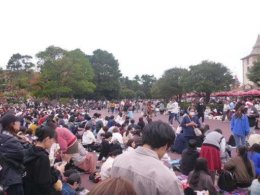
パレードが始まる。
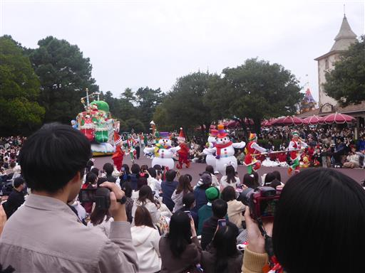
様々なかわいらしいフロート車がやってくる。
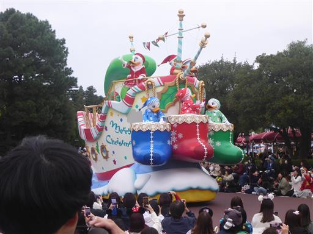
みんなのアイドル、ミッキーマウス。
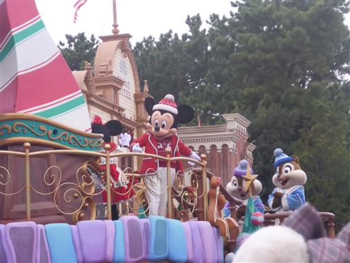
アナ雪。
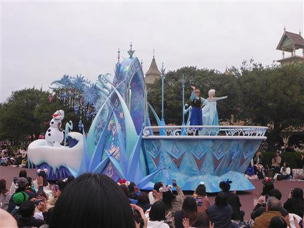
パレードが終了したら改めてシンデレラ城を訪れる。
来るのが遅すぎたのか、もう中には入れないようになっていた。残念。
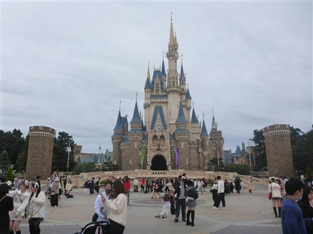
周囲はだいぶ暗くなってきた。電飾がついて華やかだ。
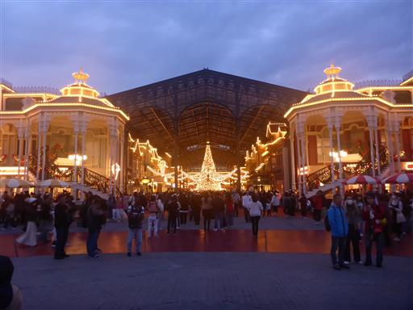
昼食は屋台をはしごしたが、あまり多くは食べられなかったので、
夕食は早めにとることにする。
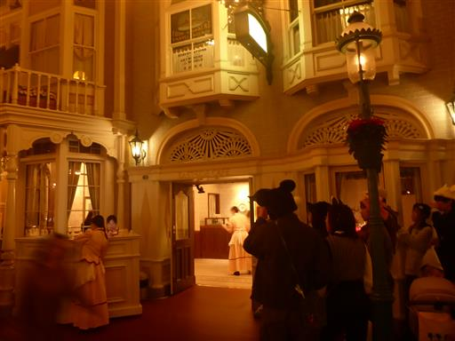
夕食後はシンデレラ城に映したプロジェクションマッピングのショーを眺める。
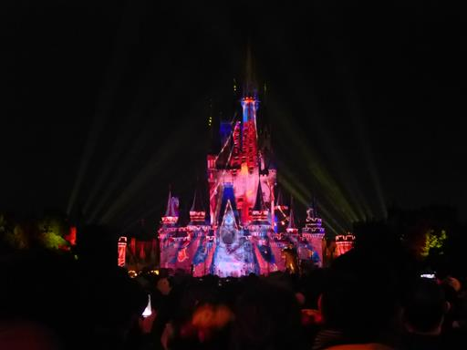
ショーの後はスター・ツアーズ。3D眼鏡をかけてスターウォーズの世界を楽しむ。
これで息子が激しく酔ってしまってダウン。
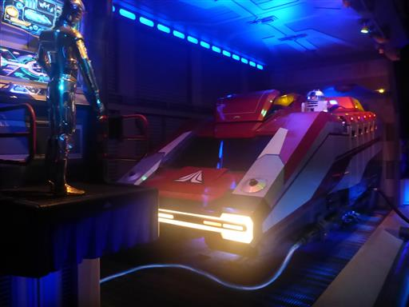
30分ほど休んだがあまり回復せず、家族みんなもう動きたくない
ということで、ここまでにして帰ることにする。
クローズまであと2時間あったが、ここで無念の帰宅。
大混雑だったこともあり、不完全燃焼に終わってしまったが、
家族で初めてのディズニーランドはそれなりに楽しむことができた。
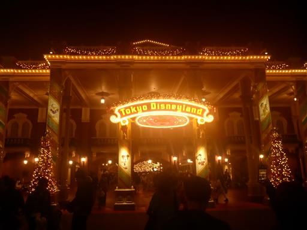